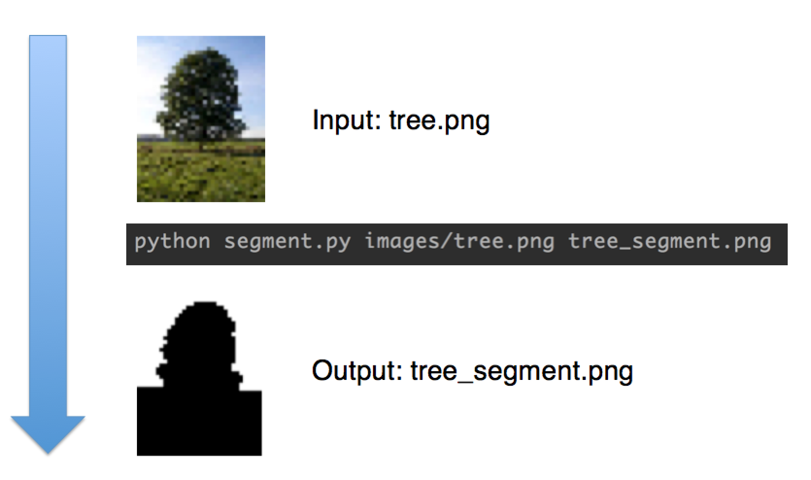
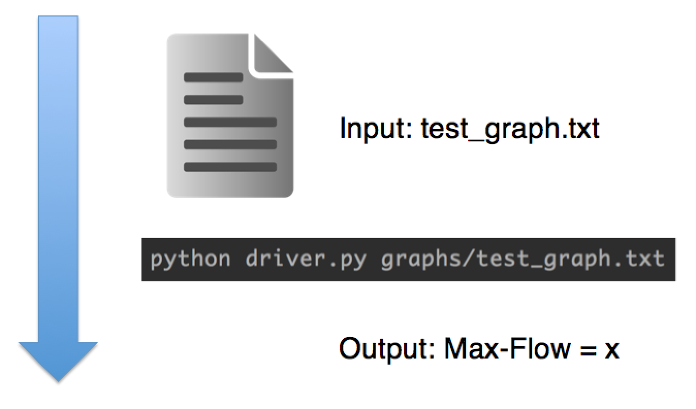
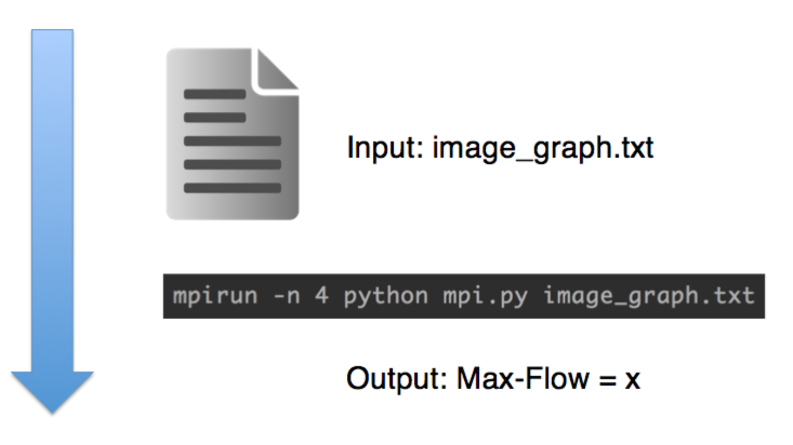

You can download our source code from
github. There is a README.md file with extensive instructions on how to run our code from the command line. Take special note of the dependencies section if you are not running on SEAS Resonance Nodes. You will need to download OpenMPI and MRJob yourself.
Examples
Binary Image Segmentation

MapReduce

MPI (from Resonance node)
